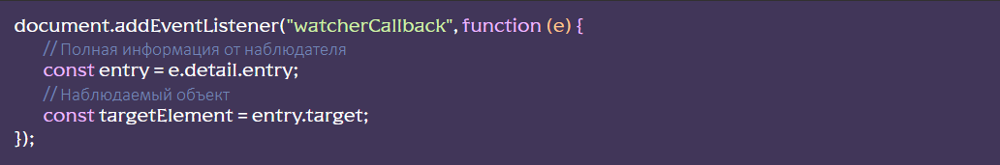

Подключение модуля
[HTML] Для объекта, за которым нужно установить наблюдение, следует добавить атрибут
data-watch

[JS] В файле js/app.js раскомментировать строку import ‘./libs/watcher.js’
Дополнительные настройки:
- data-watch-root=’селектор’ – селектор родителя внутри которого наблюдать за объектом. По умолчанию <body>
- data-watch-margin=’значение’ – отступ от родителя. Указываем значение в РХ или в %
- data-watch-threshold=’значение’ – процент показа объекта для срабатывания. Где 1 = 100% показ объекта. Указываем только целые или десятичные числа, по умолчанию О. Может содержать массив значений через запятую.
- data-watch-once – наблюдать только один раз. То есть класс к объекту добавится только один раз и не будет убран при уходе объекта из вьюпорта.
Пример - класс добавится только один раз, при появлении объекта на 50% его высоты:

События
После каждом срабатывании наблюдателя, возникает событие watcherСallback, его можно отловить в любой части кода:
Полная информация от наблюдателя
Функционал находится в файле js/libs/watcher.js. Название класса ScrollWatcher. Модуль построен на основе Intersection Observer API.
Модуль снабжен системой FLS и будет сообщать о своих действиях в консоль браузера